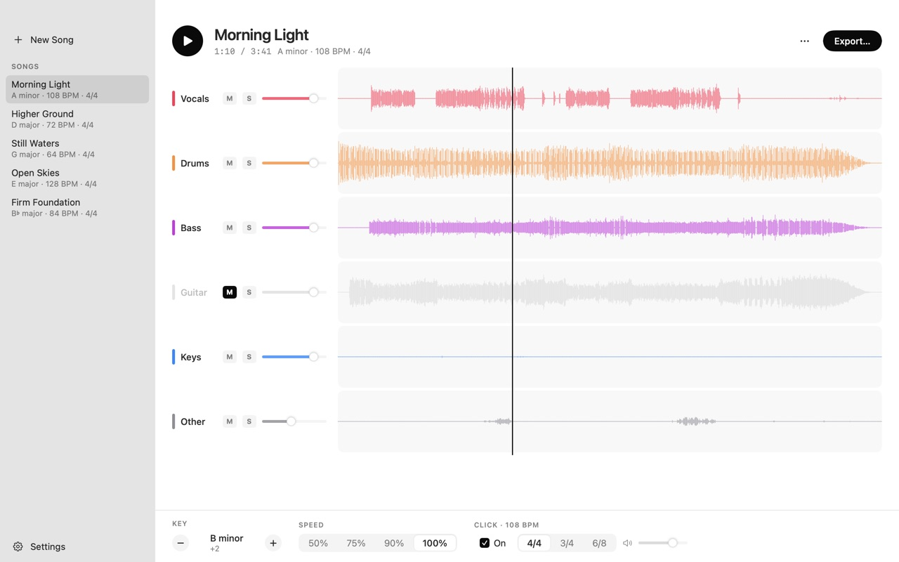
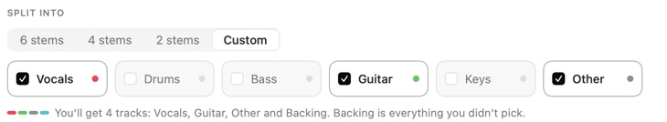
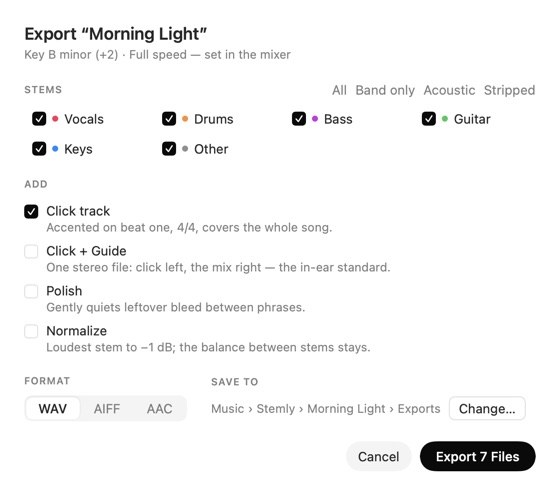

Any song, split for your band.
Vocals, drums, bass, guitar and keys, each on its own track.
Free during the beta. For Macs with Apple silicon, macOS 14 or later.

Pick the parts you need.
Split everything, or keep only what you will practise. The rest lands on one track, so nothing is lost.

-
6 stems
- Vocals
- Drums
- Bass
- Guitar
- Keys
- Other: effects, pads, extra sounds
-
4 stems
- Vocals
- Drums
- Bass
- Other, with guitar and keys
-
2 stems
- Vocals
- Instrumental
-
Custom
- Any of the six, plus one Backing track of everything you left out
Rehearse in your team’s key.
Hear it transposed, slowed down and on a click before anyone exports a file.
- Key
- ±7 semitones
- Tonal parts move. Drums stay put.
- Speed
- 50 to 100%
- Slower without changing the pitch.
- Click
- 4/4, 3/4, 6/8
- Accents beat one and covers the intro.
Export what your rig plays.
Stems as WAV, AIFF or AAC, in the key and speed you set.
- Click track
- Its own file for the drummer or the playback rig.
- Click + Guide
- One stereo file, click left and the mix right: the in-ear standard.
- Polish and Normalize
- Quiets leftover bleed and evens the levels, balance kept.

Your music never leaves your Mac.
Splitting runs on your Mac’s own chip. No account, no upload, nothing collected.
Get Stemly.
Free during the beta, with updates built in. Stemly Pro comes with the App Store release.
Apple silicon, macOS 14 or later.
Drag Stemly into Applications.
Allow it once. In System Settings, Privacy & Security, choose Open Anyway.
Drop a song on Stemly. A four-minute song splits in about a minute.